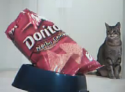

Top 7 Recipes for Confusion: a taxonomy of miscommunication
Boykin gives 7 recipes for confusion and tips for avoiding them in web design. I've also embedded the hilarious cat food video he created that explains the importance of designing for the cat, not the owner.
"The number 1 rule of e-commerce: make it easy for people to give you money."
This presentation was given by John Boykin at the IA Summit 2010, in Phoenix, AZ. You can Listen to the Boxes and Arrows Podcast.
Satisfy the Cat video (A.K.A. User-Centered Design)
The 7 Recipes or, We get confused when:
- Unmet expectations: what we encounter is different from what we expect to encounter (simple surprise).
- Avoid surprising users, even if you think it might be a good surprise.
- Make your site as smart as your users expect it to be (misspelling, no extra information needs input, etc.).
- Always give feedback.
- Misleading similarity: we encounter things that appear to be similar, but are actually different.
- Expect subtle differences to be lost on users.
- Spotlight those differences
- Don't make something look like something that it's not.
- Poor placement: information we need is located where we either overlook it or draw misleading meanings from its placement vis-a vis other elements.
- The location is more important than eloquence.
- Use space to clarify relationships among elements.
- Clarity should trump aesthetics.
- Mismatch: two things that ought to match, don’t.
- Make sure all contributors are on the same page, especially in the face of last-minute changes.
- Add a 0.5 second delay to make sure flyout navigation is correct and not accidental.
- Don’t expect people to know that 2 things are synonymous (name them consistently).
- Information Gap: there is a gap between the information we need and the information we have.
- Give icons dimensions of meaning other than color (i.e. words and shapes), because color blindness is common.
- Value clarity first, brevity second.
- Assume users don’t know your stuff as well as you (or your client) do.
- Anticipate the information that users will need to make their decision.
- Inundation: we get too much information, it comes too fast, it's too complicated, or we are not prepared for it.
- Remove unnecessary information, ruthlessly prioritize
- Ease users into complexity, step by step.
- Provide brief explanations for complicated terms.
- When in doubt, err on the side of simplicity. Ruthlessly prioritize what's essential (and put optional stuff elsewhere).
- Non-information: information is expressed so poorly we can only guess at its meaning.
- Lead with the self-explanatory term and then give the proprietary (jargony) term afterwards.
- Or lead with photos or images.
- Or give context.
- Don't force premature choice.
Mnemonics for Remembering the 7 Recipes (to avoid)
Option 1
- S imilarity (misleading)
- P oor placement
- I nundation
- N on-information
- M ismatch
- E xpectations (unmet)
- G ap (information)
Option 2
- M ismatch
- E xpectations (unmet)
- N on-information
- P oor placement
- I nundation
- G ap (information)
- S imilarity (misleading)